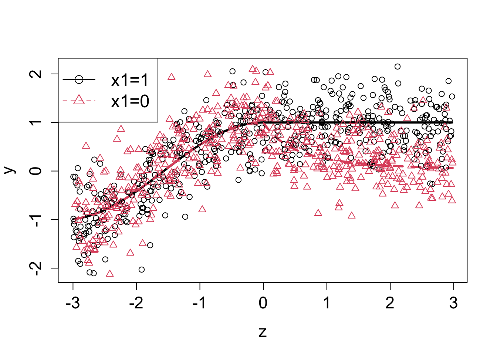
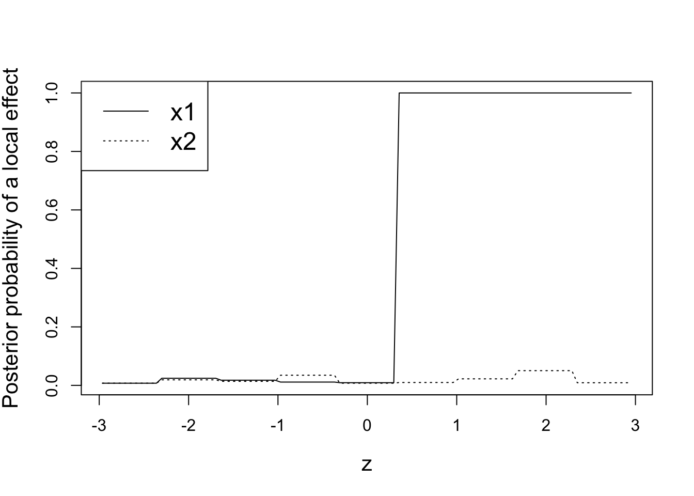
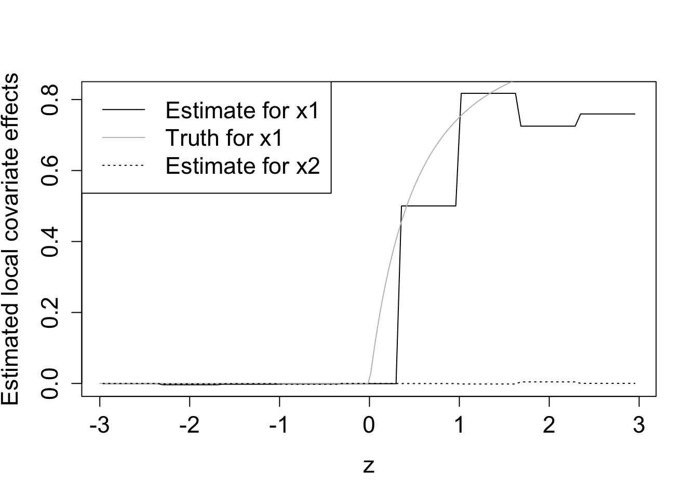
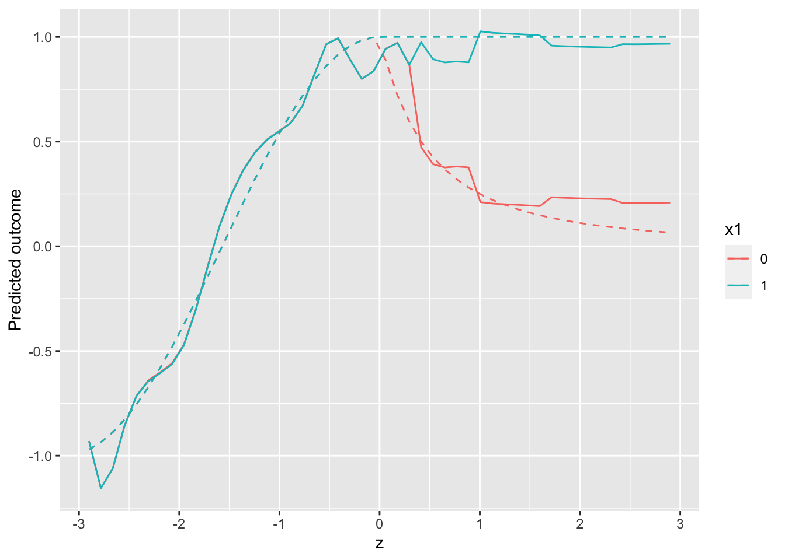
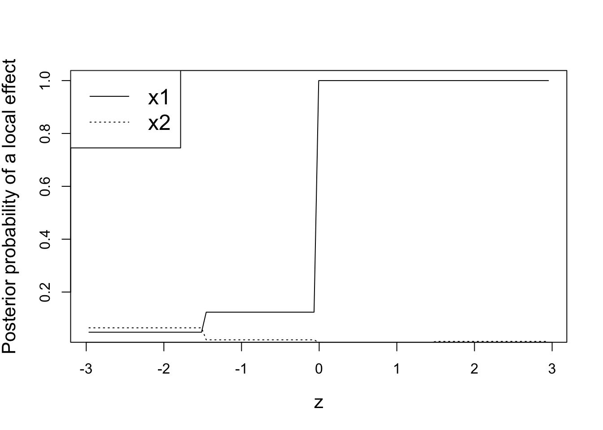
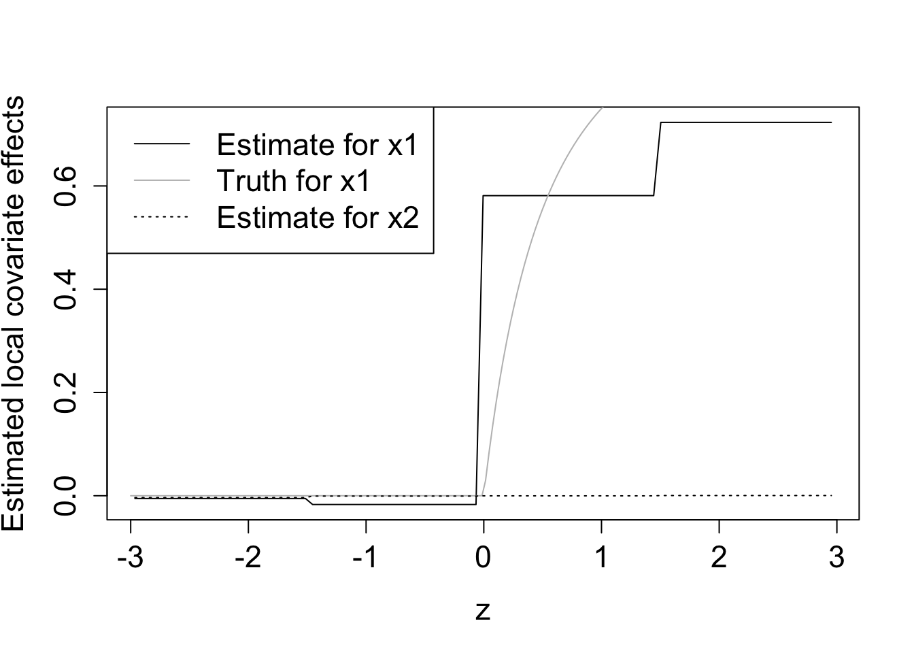
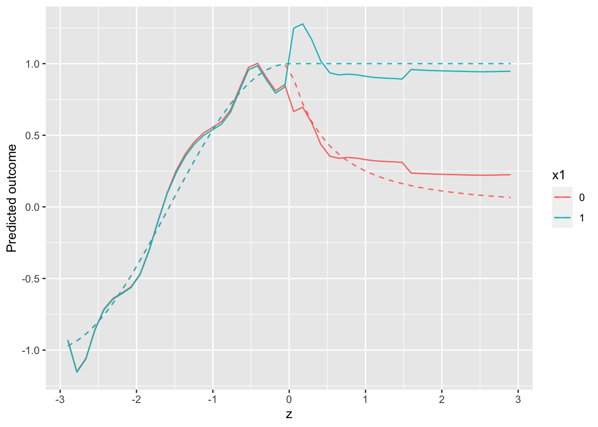

library(mombf)
library(parallel)
library(tidyverse)
source('routines.R')Local null testing example
This notebook illustrates how to use function localnulltest. We load required packages and source an auxiliary file routines.R containing localnulltest (this will be incorporated into package mombf later).
We will use a simulated example where we wish to test for the effect of two covariates at various coordinates \(z \in (-3,3)\). That is we wish to assess the local null hypothesis \[ \beta_j(z) =0 \] for covariates \(j=1,2\). In our example the first covariate is binary, the second covariate is continuous and the correlation between both covariates is roughly 0.43. The simulation truth is set such that the second covariate truly has no effect on the outcome (i.e. \(\beta_2(z)=0\) for all \(z\)) and the first covariate has an effect \(\beta_1(z) > 0\) for \(z>0\) and no effect for \(z \leq 0\).
truemean= function(x,z) {
ans= double(nrow(x))
group1= (x[,1]==1)
ans[group1]= ifelse(z[group1] <=0, cos(z[group1]), 1)
ans[!group1]= ifelse(z[!group1]<=0, cos(z[!group1]), 1/(z[!group1]+1)^2)
return(ans)
}
n= 1000
x1= rep(0:1,c(n/2,n/2))
x2= x1 + rnorm(n)
x= cbind(x1,x2)
z= runif(n,-3,3)
m= truemean(x,z)
y= truemean(x,z) + rnorm(n, 0, .5)cor(x1,x2)[1] 0.4462063The solid lines in the plot below show the true mean of the outcome as a function of \(x_1\) and the coordinate \(z\), as well as the simulated observations.
sel= x[,1]==1; o= order(z[sel])
plot(z[sel][o], m[sel][o], ylim=range(y), xlab='z', ylab='y', type='l', lwd=3, cex.axis=1.4, cex.lab=1.4)
o= order(z[!sel])
lines(z[!sel][o], m[!sel][o], col=2, lty=2, lwd=3)
sel= x[,1]==1; points(z[sel], y[sel]); points(z[!sel], y[!sel], col=2, pch=2)
legend('topleft', c('x1=1','x1=0'), lty=c(1,2), col=c(1,2), pch=1:2, cex=1.5)
Single-resolution analysis (single number of local knots)
localnulltest has a number of parameters, all of which are set to minimally sensible defaults. A relevant parameter is nlocalknots, which specifies the number of knots by a cut-spline basis to perform the local tests. For example, for a cut-spline basis of degree 0 (the default) setting nlocalknots=10 effectively divides the range of z values into 10 intervals, and conducts a separate test for each interval.
fit0= localnulltest(y, x=x, z=z, nlocalknots=10)We use functions coef and predict to extract useful information. The former returns a data.frame where, for each covariate and value of \(z\) in a grid, returns the posterior probability \(P(\beta_j(z) \mid y)\) of there being a local effect (column margpp), as well as point estimates \(E(\beta_j(z) \mid y)\) (obtained as Bayesian model averaging posterior means), and 0.95 posterior intervals. The first few rows below show that for small \(z\) there is a small probability \(P(\beta_1(z) \mid z)\) that covariate 1 has an effect, as we would expect, and that most of the posterior mass is at 0 (specifically, the 0.95 interval is the singleton 0).
b= coef(fit0)
head(b) covariate z1 estimate 2.5% 97.5% margpp
1 1 -2.9640 -0.0003403344 0 0 0.0074
2 1 -2.9035 -0.0003403344 0 0 0.0074
3 1 -2.8430 -0.0003403344 0 0 0.0074
4 1 -2.7830 -0.0003403344 0 0 0.0074
5 1 -2.7225 -0.0003403344 0 0 0.0074
6 1 -2.6620 -0.0003403344 0 0 0.0074We visualize the posterior probabilities of there being a local effect for both covariates. These do a good job at recovering the truth, i.e. that only \(x_1\) has an effect for \(z>0\).
sel= (b[,'covariate']==1)
plot(b[sel,'z1'], b[sel,'margpp'], type='l', xlab='z', ylab='Posterior probability of a local effect', cex.lab=1.3)
lines(b[!sel,'z1'], b[!sel,'margpp'], lty=3)
legend('topleft', c('x1','x2'), lty=c(1,3), cex=1.5)
It is also possible to compare the estimated local effects versus their true value, again the estimates do a good job at capturing the group differences. Note that the piece-wise constant is given by the choice of using 0-degree cut-splines for the local effects.
zseq= seq(-3,3,length=200)
sel= (b[,'covariate']==1)
plot(b[sel,'z1'], b[sel,'estimate'], type='l', xlab='z', ylab='Estimated local covariate effects', cex.lab=1.4, cex.axis=1.4)
mdif= truemean(x=matrix(1,nrow=length(zseq)),z=zseq) - truemean(x=matrix(0,nrow=length(zseq)),z=zseq)
lines(zseq, mdif, col='gray')
lines(b[!sel,'z1'], b[!sel,'estimate'], lty=3)
legend('topleft', c('Estimate for x1','Truth for x1','Estimate for x2'), lty=c(1,1,3), col=c(1,'gray',1), cex=1.4)
Finally, it can be informative to plot the predicted outcome as a function of \(z\) and the covariates. Below we obtain predictions for a grid of \(z\) values, \(x_1 \in \{0,1\}\), and \(x_2\) being set to its sample mean.
znew= matrix(rep(seq(-2.9,2.9,length=50),2),ncol=1)
xnew= cbind(rep(0:1,each=nrow(znew)/2), mean(x2))
newdata= list(x=xnew, z=znew)Then predictions can be obtained with function predict, using newdata to indicate for what values of \((x,z)\) we want to obtain the predictions (if not specified, predictions are produced for the values of \((x,z)\) in the observed data given as input to localnulltest).
ypred= predict(fit0, newdata=newdata)
df= tibble(x1=factor(xnew[,1]), x2=xnew[,2], z=znew, ypred=ypred, truemean=truemean(xnew,znew))
ggplot(df) +
geom_line(aes(z, ypred, color=x1)) +
geom_line(aes(z, truemean, color=x1), lty=2) +
labs(y="Predicted outcome")
Multi-resolution analysis
We now consider a multi-resolution analysis where, rather than fixing the number of knots defining the local tests to be 10, we consider multiple values and use Bayesian model selection to average across the resolutions. Specifically we consider 5, 10 and 15 knots, and set mc.cores=3 so that the analysis for each resolution is run in parallel (if package parallel does not run on your machine, you may set mc.cores=1). The output pp_localknots below indicates the posterior probability of each resolution level, which overwhelmingly favor 5 knots in our example.
fit= localnulltest(y=y, x=x, z=z, nlocalknots=c(5,10,15), mc.cores=3)
fit$pp_localknots[1] 9.999025e-01 9.748302e-05 9.359311e-09As before, we may plot the posterior probabilities for local effects and their estimated values, as well as forecasts for the outcome. These are weighted averages across resolution levels, weighted by the posterior probability of each resolution level. Note that the step-wise behavior is more marked now than before when we used 10 local knots. This causes the posterior local test probabilities \(P(\beta_j(z) \neq 0)\) to be more stable across \(z\), at the cost of the estimated local effects \(E(\beta_j(z) \mid y)\) being coarser. Since our main goal is to test local null hypotheses, this seems a reasonable trade-off in our example. The forecasted outcome continues to be a similarly accurate approximation to the data-generating truth as in the single-resolution analysis.
b= coef(fit)
sel= (b[,'covariate']==1)
plot(b[sel,'z1'], b[sel,'margpp'], type='l', xlab='z', ylab='Posterior probability of a local effect', cex.lab=1.3)
lines(b[!sel,'z1'], b[!sel,'margpp'], lty=3)
legend('topleft', c('x1','x2'), lty=c(1,3), cex=1.5)
zseq= seq(-3,3,length=200)
sel= (b[,'covariate']==1)
plot(b[sel,'z1'], b[sel,'estimate'], type='l', xlab='z', ylab='Estimated local covariate effects', cex.lab=1.4, cex.axis=1.4)
mdif= truemean(x=matrix(1,nrow=length(zseq)),z=zseq) - truemean(x=matrix(0,nrow=length(zseq)),z=zseq)
lines(zseq, mdif, col='gray')
lines(b[!sel,'z1'], b[!sel,'estimate'], lty=3)
legend('topleft', c('Estimate for x1','Truth for x1','Estimate for x2'), lty=c(1,1,3), col=c(1,'gray',1), cex=1.4)
ypred= predict(fit, newdata=newdata)
df= tibble(x1=factor(xnew[,1]), x2=xnew[,2], z=znew, ypred=ypred, truemean=truemean(xnew,znew))
ggplot(df) +
geom_line(aes(z, ypred, color=x1)) +
geom_line(aes(z, truemean, color=x1), lty=2) +
labs(y="Predicted outcome")